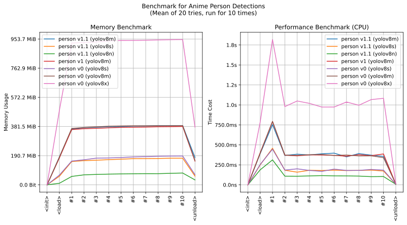

imgutils.detect.person¶
- Overview:
Detect human bodies (including the entire body) in anime images.
Trained on dataset AniDet3 with YOLOv8.

This is an overall benchmark of all the person detect models:

detect_person¶
-
imgutils.detect.person.detect_person(image: Union[str, os.PathLike, bytes, bytearray, BinaryIO, PIL.Image.Image], level: str = 'm', version: str = 'v1.1', max_infer_size=640, conf_threshold: float = 0.3, iou_threshold: float = 0.5)[source]¶ - Overview:
Detect human bodies (including the entire body) in anime images.
- Parameters:
image – Image to detect.
level – The model level being used can be either
n,s,morx. Thenmodel runs faster with smaller system overhead, while themmodel achieves higher accuracy. The default value ism.version – Version of model, default is
v1.1. Available versions arev0,v1andv1.1.max_infer_size – The maximum image size used for model inference, if the image size exceeds this limit, the image will be resized and used for inference. The default value is
640pixels.conf_threshold – The confidence threshold, only detection results with confidence scores above this threshold will be returned. The default value is 0.3.
iou_threshold – The detection area coverage overlap threshold, areas with overlaps above this threshold will be discarded. The default value is 0.5.
- Returns:
The detection results list, each item includes the detected area (x0, y0, x1, y1), the target type (always person) and the target confidence score.
- Examples::
>>> from imgutils.detect import detect_person, detection_visualize >>> >>> image = 'genshin_post.jpg' >>> result = detect_person(image) >>> result [ ((371, 232, 564, 690), 'person', 0.7533698678016663), ((30, 135, 451, 716), 'person', 0.6788613796234131), ((614, 393, 830, 686), 'person', 0.5612757205963135), ((614, 3, 1275, 654), 'person', 0.4047100841999054) ] >>> >>> # visualize it >>> from matplotlib import pyplot as plt >>> plt.imshow(detection_visualize(image, result)) >>> plt.show()
Note
Please note that certain combinations of versions and levels may not have corresponding models. When using them, please refer to the performance chart at the top of that page, which lists the versions and models included.